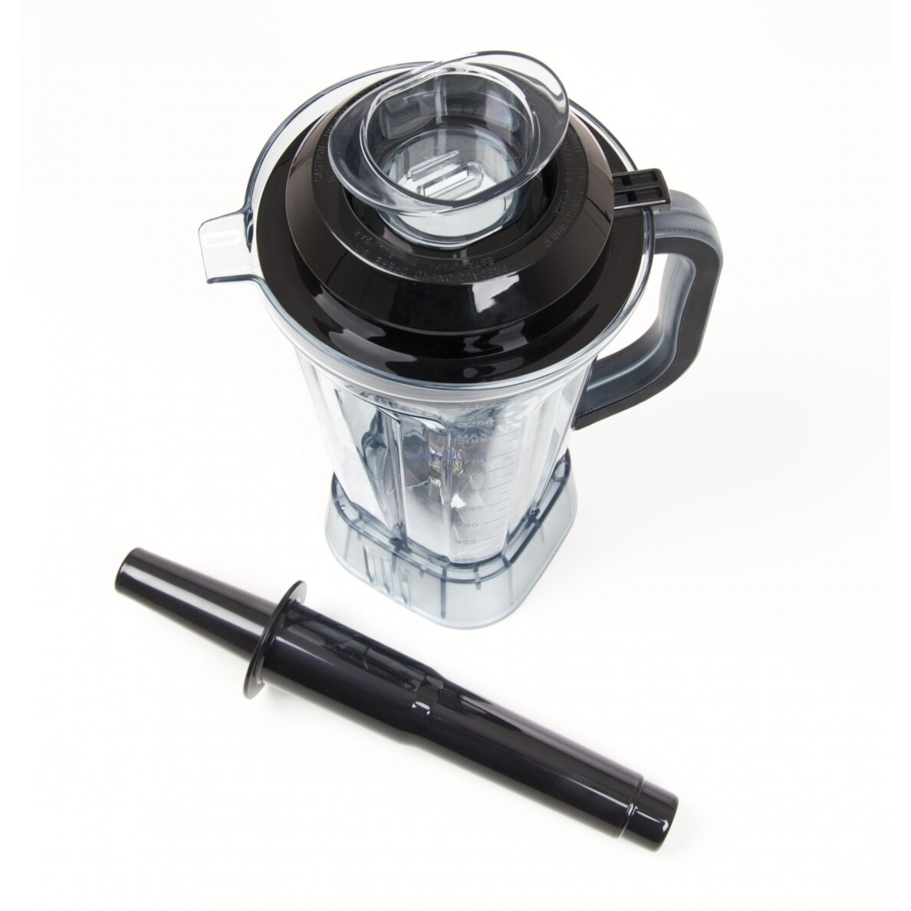

Welcome to Blenderiai
Blenderiai – Arvitra
2020.10.29 12:20
Įranga ir Produktai Servisas Karjera Kontaktai Apie ArvitrA Komercinis Pasiūlymas Mano Komercinis Pasiūlymas Gauti Komercinį Pasiūlymą Mano paskyra Mano paskyra Privatumo Politika
Blenderiai
Gauti Komercinį PasiūlymąBlenderis plakiklis Jumbomixer X5
0 out of 5Galingumas (kW): 0,75/230V
Sukimosi greitis: 14000-24000 aps/min
Talpa: 5 ltr
Produkto kodas: Jumbomixer X5
Gauti daugiau informacijos apie šį produktą
€ 838.00 (be PVM) Gauti Komercinį Pasiūlymą Gauti Komercinį PasiūlymąTermoblenderis Minicooker
0 out of 5Galingumas (kW): 0,6 /230V
Indukcinio kaitinimo galingumas (kW): 1,0
Indo talpa (ltr): 2
Temperatūra: iki 120 °C
Produkto kodas: Minicooker
Gauti daugiau informacijos apie šį produktą
€ 1,100.00 (be PVM) Gauti Komercinį Pasiūlymą Gauti Komercinį PasiūlymąTermoblenderis Mycook
0 out of 5Galingumas (kW): 0,8 /230V
Indukcinio kaitinimo galingumas (kW): 1,0
Indo talpa (ltr): 2
Temperatūra: iki 120 °C
Produkto kodas: Mycook
Gauti daugiau informacijos apie šį produktą
€ 1,150.00 (be PVM) Gauti Komercinį Pasiūlymą Gauti Komercinį PasiūlymąTermoblenderis Robot Cook
0 out of 5Galingumas (kW): 1,8 /230V
4 greičio funkcijos
Maks. greitis: iki 4500 aps/min
Indo talpa (ltr): 3,7
Temperatūra: iki 140 °C
Produkto kodas: Robot Cook
Gauti daugiau informacijos apie šį produktą
€ 2,870.00 (be PVM) Gauti Komercinį PasiūlymąKomercinio Pasiūlymo Krepšelis
Produkto kategorijos
Skalbyklų Įranga Skalbimo mašinos Skalbimo mašinos FAGOR Skalbimo mašinos LA serija Savitarnos apmokėjimo sistemos Skalbimo mašinos PRIMUS Didelio užkrovimo skalbimo mašinos FS serija Skalbimo mašinos FX serija Skalbimo mašinos PCF serija Padidinto gręžimo skalbimo mašinos RX serija Džiovinimo mašinos Džiovinimo mašinos FAGOR Savitarnos apmokėjimo sistemos Džiovinimo mašinos Green Evolution Plus serija Džiovinimo mašinos Green Evolution serija (sensorinis valdymas) Džiovinimo mašinos Green Evolutions serija (rankinis valdymas) Džiovinimo mašinos Economic Line serija Džiovinimo mašinos PRIMUS Džiovinimo būgnai DX serija Džiovinimo būgnai T serija Lyginimo mašinos Lyginimo mašinos FAGOR Lyginimo volai Lyginimo-džiovinimo mašinos (kalandrai) Pramoninės lyginimo-džiovinimo-lankstymo mašinos (kalandrai) Mažų skalbyklų įranga Mažų skalbyklų įranga FAGOR Mažų skalbyklų įranga PRIMUS Savitarnos apmokėjimo sistemos FAGOR Pramoninės - Barjerinės skalbimo mašinos Barjerinės skalbimo mašinos FAGOR Galutinio skalbinių paruošimo įrenginiai Galutinio skalbinių paruošimo įrenginiai FAGOR Dėmių šalinimo stalai Lyginimo lentos Pneumatiniai lyginimo presai Lyginimo-džiovinimo kabinos, manekenai Skalbinių vežimėliai Parduotuvių Įranga Prekybiniai vežimėliai, krepšeliai Prekybiniai vežimėliai - plastikiniai Prekybinis vežimėlis City 110 Prekybinis vežimėlis Duka 210 Prekybinis vežimėlis Hybrid Hyper 240 Prekybinis vežimėlis Hybrid Super 180 Prekybinis vežimėlis Keita 90 Prekybinis vežimėlis Twiga 150 Savitarnos krepšiai su ratukais Savitarnos vežimėliai - metaliniai Savitarnos vežimėliai Shop & Roll Universalūs savitarnos krepšeliai Vežimėliai savitarnos krepšeliams Šaldymo įranga Reklaminiai šaldytuvai Šaldytuvai-vitrinos Šaldymo vitrinos ledams Šaldymo vitrinos ledams Igloo Šaldymo vitrinos ledams CombiSteel Šaldymo vitrinos ledams Scaiola Šaldymo vitrinos ledams Bolarus Šaldymo vitrinos ledams ES System K Gastronominės šaldymo vitrinos Gastronominės šaldymo vitrinos ES System K Horizontalūs šaldikliai (loviai) Horizontalūs šaldikliai Elcold Horizontalūs šaldikliai ES System K Konditerinės šaldymo vitrinos Konditerinės šaldymo vitrinos Igloo Šaldymo vitrinos šokoladui Scaiola Konditerinės šaldymo vitrinos Bolarus Konditerinės šaldymo vitrinos ES System K Konditerinės šaldymo vitrinos LENARI Šaldymo priesieniai Šaldymo priesieniai Bolarus Šaldymo priesieniai Juka Šaldymo priesieniai ES System K Šaldymo priesieniai REMOTE (išorinis agregatas) Šaldymo salos Šaldymo salos Bolarus Šaldymo salos Juka Šaldymo salos ES System K Šaldymo salos REMOTE (išorinis agregatas) Šaldymo vitrinos Šaldymo vitrinos Bolarus Šaldymo vitrinos Juka Šaldymo vitrinos ES System K Šaldymo vitrinos REMOTE (išorinis agregatas) Maisto Gamybos Įranga Baro įranga Vyno dispenseriai Sauso ledo gaminimo aparatai Taurių šaldikliai Baro šaldytuvai Baro šaldytuvai Combi Baro šaldytuvai Forcar Baro šaldytuvai Gort Baro šaldytuvai Scandomestic Reklaminiai šaldytuvai Espresso kavos virimo aparatai Carat Diamant Rosetta Zircon Ledo smulkintuvai Baro reikmenys Blenderiai-plakikliai Kavos aparatai ANIMO Kavos aparatai Animo Combi-Line Kavos aparatai Animo M-Line Kavos aparatai Animo Optibean Kavos aparatai Animo Optifresh Kavos aparatai Animo Optivend Priedai Kavos aparatai HENDI Kavos malūnai Ledų gamyba Ledų Teppanyaki Minkštų ledų gaminimo aparatai Pieno kokteilių plakikliai Pieno šildytuvai ANIMO Šalto vandens dozatoriai Sulčiaspaudės Citrusinių vaisių sulčiaspaudės Lėtaeigės sulčiaspaudės Vaisių ir daržovių sulčiaspaudės Sulčių ir gėrimų dispenseriai Vandens virduliai ir virintuvai Vandens virduliai ANIMO Virintuvai HENDI Vežimėliai/stovai kavos aparatams Higienos įranga Apsauginiai veido skydeliai Skysto muilo ir dezinfekantų dozatoriai Multifunkcinės rankplovės Oro valytuvai Fast Food ir Bistro įranga Indų plovimo įranga Baro indaplovės Dwash Dihr Optima serija DS serija GS serija Tekno serija Hendi Frontalinės indaplovės Dwash Abat Dihr Optima serija DS serija GS serija Tekno serija Hendi Kupolinės indaplovės Dwash Dihr Hendi Specializuotos indaplovės Tunelinės indaplovės QX su pirštiniu konvejeriu RX Compact RX EVO RX Optima RX PRO VX Indaplovės Twin Star Virtuvės inventoriaus plovimo mašinos LP serijos puodaplovės Granulinės virtuvės inventoriaus plovimo mašinos Cheminės priemonės indaplovėms Vandens minkštintuvai Priedai indaplovėms Stovai indaplovėms Indaplovių krepšiai Indaplovių krepšių vežimėliai Kebabinių įranga Kebabinių griliai Kebabinių griliai Hendi Kebabinių griliai Potis Dujiniai kebabinių griliai Potis Elektriniai kebabų griliai Potis Kebabinių grilių Potis priedai Kebabinių grilių priedai Kepyklų įranga Planetariniai mikseriai Planetariniai mikseriai Abat Hendi Kitchen Line Serija DPM Serija MPM Serija N Serija NH Konditerinės kepimo krosnys Bakery&Pastry Convotherm Bake Bakery&Pastry Electric Line Bakery&Pastry Gas Line Bakery&Pastry Millennial Smart Line Bakery&Pastry Millennial Black Mask Line Bakery&Pastry Millennial Touch Screen Line Electric Bakery&Pastry Millennial Touch Screen Line Gas Kildinimo spintos Padinės kepimo krosnys Spurgų kepimo gruzdintuvės Vaflinės ir blyninės Lauko prekybos įranga Išvažiuojamųjų pokylių baldai Mobilūs vežimėliai ledams Spragėsių (Popcorn) gaminimo aparatai Cukraus vatos gaminimo aparatai Vaflinės ir blyninės Šildytuvai Dujiniai šildytuvai Ledo gaminimo įranga Sauso ledo gaminimo aparatai Granulinio ledo generatoriai Ledo "piramidžių" formos generatoriai Ledo "pirštukų" formos generatoriai Ledo drožlių generatoriai Ledo kubelių formos generatoriai Rupaus sniego generatoriai Talpos ledui Maisto išdavimo įranga Lėkščių dispenseriai Šildomi stalai Stalo marmitai "Chafing dish" Degia pasta pašildomi stalo marmitai Elektriniai sriubos marmitai Elektriniai stalo marmitai Indukciniai apvalūs stalo marmitai Globe Indukciniai stalo marmitai Karštųjų gėrimų dispenseriai Šildymo elementai Degi pasta ir kuras marmitams šildyti Šildomos lempos Pakabinamos šildomos lempos Pastatomos lentynos su šildoma lempa Pritvirtinamos šildomos lempos Marmitai Švediško stalo mobili įranga Maisto išdavimo vežimėliai - marmitai Maisto išdavimo marmitai-vežimėliai Gort Maisto išdavimo vežimėliai Scanbox Savitarnos linija Scaiola Maisto išdavimo linija Hot Line Įmontuojama maisto išdavimo įranga Įmontuojama maisto išdavimo linija Gort Įmontuojama maisto išdavimo įranga Forcar Priedai išdavimo linijai Maisto ruošimo įranga Vaisių ir uogų pertrynimo ir iškaulinimo mašinos Maisto produktų džiovyklės Rankiniai plakikliai Rankiniai plakikliai Fama Fixed Speed 250 VF Rankiniai plakikliai Fama Fixed Speed 350 VF Rankiniai plakikliai Fama Fixed Speed 450 VF Rankiniai plakikliai Fama Fixed Speed 650 VF Rankiniai plakikliai Fama Variable Speed 250 VV Rankiniai plakikliai Fama Variable Speed 300 VV Rankiniai plakikliai Fama Variable Speed 350 VV Rankiniai plakikliai Fama Variable Speed 400 VV Rankiniai plakikliai Fama Variable Speed 450 VV Rankiniai plakikliai Fama Variable Speed 650 VV Rankinių plakiklių priedai Fama Blenderiai Malūnėliai Užšaldytų produktų smulkintuvai Pacojet Daržovių pjaustyklės Daržovių pjaustyklės 4Maszgastro Daržovių pjaustyklės Celme Daržovių pjaustyklės Robot Coupe Daržovių pjaustyklės Fama Daržovių pjaustyklės Fama Élite Daržovių pjaustyklės Hendi Gastronominės pjaustyklės Gastronominės pjaustyklės Fama Pjaustyklės Hendi Mėsmalės Mėsmalės Fama TS Modeliai Mėsmalės Fama TI Modeliai Mėsmalės Fama UNGER Modeliai Mėsmalės Fama TI R Modeliai Mėsmalės Fama UNGER TI R Modeliai Mėsmalės Fama UNIKO Modeliai Mėsmalės Fama su šaldymo funkcija Pagalbiniai prietaisai mėsmalėms Fama Mėsmalės su smulkintuvėmis Mėsmalės su smulkintuvėmis Fama TG Modeliai Mėsmalės su smulkintuvėmis Fama TGI Modeliai Mėsmalės su smulkintuvėmis Fama UNIKO Modeliai Bulviaskutės Bulviaskutės Fama Bulviaskutės Hendi Bulviaskutės Abat Bulviaskutės Maxima Kuteriai Kuteriai La Felsinea Kuteriai Fama Kuteriai Mozzarella sūriams Spiralinės tešlos maišyklės Mėsos purentuvai Kaulų ir mėsos pjūklai Kaulų ir mėsos pjūklai Fama Dešrų kimštuvai Maltinio formavimo presai Plovyklės, džiovintuvai Midijų plovyklės Fama Pakavimo ir vakuumavimo mašinos Užlydymo aparatai Vakuumatoriai Kiaušinių sterilizatoriai Peilių sterilizatoriai Turbo mikseriai Maisto transportavimo įranga Termovežimėliai Gort Maisto išdavimo vežimėliai Termovežimėliai ScanBox Bakery Line padėklams 400/450/460x600 Banquet Line GN 2/1 talpoms Ergo Line GN 1/1 talpoms Termokonteineriai Termokonteineriai Thermax Line AF AL AS QC Šildymo/šaldymo elementai Thermax Line termokonteinerių priedai Thermax Line termokonteinerių vežimėliai Termokonteineriai Active Line Termokonteineriai Melpop Line Termokonteineriai Hendi Termopadėklai Termopadėklai Bess Line Termopadėklai Monotherm Line Termopadėklų Monotherm Line priedai Termosai Vežimėliai Nerūdijančio plieno baldai Apiplovimo dušai Nerūdijančio plieno gartraukiai Nerūdijančio plieno stalai Nerūdijančio plieno stalviršiai Nerūdijančio plieno stalai su rėmu Nerūdijančio plieno stalai su lentynomis Nerūdijančio plieno stalai su plautuvėmis Nerūdijančio plieno stalai su pjaustymo lentomis Nerūdijančio plieno stalai su pjaustymo stalviršiu Nerūdijančio plieno pramoniniai stalai Nerūdijančio plieno kampiniai stalai Nerūdijančio plieno stalai su durelėmis Nerūdijančio plieno stelažai Nerūdijančio plieno stovai, spintos, vonios, lentynos Transportavimo vežimėliai Picerijų įranga Picų krosnelės Picos krosnys Basic Linija Picos krosnys Plus Linija Picos krosnys Trays Linija Picos krosnys By Moretti Forni Picos krosnys Sideup - elektrinis valdymas Picos krosnys Superior Glass pilnai išklotos šamotiniais akmenimis Dujinės picos krosnys Rotacinės krosnys Picų presai Spiralinės tešlos maišyklės Tešlos kočiojimo įrenginiai Tešlos dalytuvai ir apvalintuvai Šaldomi stalai picai Picų kepimo priedai Picų pristatymo krepšiai ir termokonteineriai Restoranų įranga Termovežimėliai ScanBox Bakery Line padėklams 400/450/460x600 Banquet Line GN 2/1 talpoms Ergo Line GN 1/1 talpoms Termovežimėliai Gort Gort 700 Linija Elektrinės viryklės Elektrinės viryklės lygiu paviršiumi Dujinės viryklės Indukcinės viryklės Kepimo paviršiai Elektriniai kepimo paviršiai Dujiniai kepimo paviršiai Griliai Gruzdintuvės Makaronų viryklės Marmitai Stacionarios keptuvės Maisto virimo katilai Maisto pašildytuvai Stalai-bazės Neutralūs paviršiai Priedai Gort 900 Linija Elektrinės viryklės Elektrinės viryklės lygiu paviršiumi Dujinės viryklės Indukcinės ir infraraudonųjų spindulių viryklės Kepimo paviršiai Dujiniai kepimo paviršiai Elektriniai kepimo paviršiai Griliai Gruzdintuvės Makaronų viryklės Marmitai Stacionarios keptuvės Maisto virimo katilai Stalai-bazės Neutralūs paviršiai Priedai Berto's Plus 600 Linija Dujinės viryklės Elektrinės viryklės Griliai Gruzdintuvės Infraraudonųjų spindulių viryklės Kepimo paviršiai Dujiniai kepimo paviršiai Elektriniai kepimo paviršiai Maisto pašildytuvai Makaronų viryklės Marmitai Neutralūs paviršiai Berto's Macros 700 Linija Dujinės viryklės Elektrinės viryklės Griliai Gruzdintuvės Infraraudonųjų spindulių ir indukcinės viryklės Kepimo paviršiai Dujiniai kepimo paviršiai Elektriniai kepimo paviršiai Maisto pašildytuvai Makaronų viryklės Marmitai Neutralūs paviršiai Šaldomi stalai-bazės Berto's S 700 Linija Daugiafunkcinės keptuvės Dujinės viryklės Elektrinės viryklės Griliai Gruzdintuvės Infraraudonųjų spindulių ir indukcinės viryklės Kepimo paviršiai Dujiniai kepimo paviršiai Elektriniai kepimo paviršiai Maisto pašildytuvai Makaronų viryklės Marmitai Neutralūs paviršiai Šaldomi stalai-bazės Berto's Maxima 900 Linija Dujinės viryklės Elektrinės viryklės Griliai Gruzdintuvės Infraraudonųjų spindulių ir indukcinės viryklės Kepimo paviršiai Dujiniai kepimo paviršiai Elektriniai kepimo paviršiai Makaronų viryklės Marmitai Neutralūs paviršiai Berto's S 900 Linija Daugiafunkcinės keptuvės Dujinės viryklės Elektrinės viryklės Griliai Gruzdintuvės Infraraudonųjų spindulių ir indukcinės viryklės Kepimo paviršiai Dujiniai kepimo paviršiai Elektriniai kepimo paviršiai Makaronų viryklės Marmitai Neutralūs paviršiai Šaldomi stalai-bazės Berto's S 900 Top Linija Daugiafunkcinės keptuvės Dujinės viryklės Elektrinės viryklės Griliai Gruzdintuvės Infraraudonųjų spindulių ir indukcinės viryklės Kepimo paviršiai Dujiniai kepimo paviršiai Elektriniai kepimo paviršiai Makaronų viryklės Marmitai Neutralūs paviršiai Valgyklų įranga Universalios pavaros Švediškas stalas Švediško stalo linija ArvitrA Mini Švediško stalo linija ArvitrA Midi Švediško stalo linija Asta Švediško stalo linija vaikams Happy Švediško stalo linija vaikams Basic Kids Švediško stalo linija "Asta Mobil" Maisto išdavimo linijos Savitarnos linija "Asta" Savitarnos linija "Patsha" Savitarnos linija "Premier" Savitarnos linija "Mini" Konvekcinės krosnys Elektrinės keptuvės Elektrinės viryklės Kepimo spintos Maisto virimo katilai Stacionarūs virimo katilai Virimo katilai su mechaniniu pavertimu Virimo katilai be mikserio Virimo katilai su mikseriu Virimo katilai su elektriniu pavertimu Virimo katilai be mikserio Virimo katilai su mikseriu Marmitai Padinės kepimo spintos Valgyklų įrangos atsarginės dalys Kaitinimo elementai Kaitvietės Perjungėjai Termoreguliatoriai Valdymo plokštės Virtuvės indai, reikmenys Cheminiai valikliai virtuvei Puodai Budget Line Aukšti puodai su dangčiais Vidutinio dydžio puodai su dangčiais Keptuvės Marble Professional keptuvės Platinum Professional keptuvės Valcuoto plieno keptuvės Peiliai Peiliai Kitchen Line Peiliai Standart-Universalūs Serviravimo reikmenys Kitchen Line Serviravimo padėklai Stalo įrankių dėklai Maisto atliekų smulkintuvai Virimo, Kepimo įranga Medžio anglimis kūrenamos krosnys-griliai Cirkuliatoriai Griliai Dešrelių griliai Dujiniai griliai Dujiniai lavos akmens griliai Griliai Salamander Grilių reikmenys Kepimo paviršiai-griliai Kontaktiniai griliai Medžio anglimis kūrenami griliai Viščiukų kepimo griliai Gruzdintuvės Konvekcinės Krosnys Konvekcinės krosnys CONVOTHERM Convotherm 4 Convotherm mini Konvekcinės krosnys TECNOEKA Compact Line Electric Cooking Line Electric Cooking Line Gas Millenial Smart Cooking Line Millenial Black Mask Cooking Line Millenial Compact Black Mask Cooking Line Millennial Touch Screen Cooking Line Electric Millennial Touch Screen Cooking Line Gas Vandens minkštintuvai Mikrobangų krosnelės Stacionarios keptuvės Dujinės stacionarios keptuvės Elektrinės stacionarios keptuvės Virimo katilai Industriniai maisto virimo katilai Firex Virimo katilai GORT Dujiniai virimo katilai Elektriniai virimo katilai Gariniai virimo katilai Priedai Viryklės Indukcinės viryklės Dujinės viryklės Elektrinės viryklės Ryžių viryklės Cheminiai valikliai griliams, krosnims Virtuvės reikmenys, indai Indai Puodeliai Lėkštės Cheminiai valikliai virtuvei Vienkartinių puodelių dozatoriai Gastronominiai indai Gastronominiai indai HACCP iš polipropileno Gastro indai GN 1/1 Gastro indai GN 1/2 Gastro indai GN 1/3 Gastro indai GN 1/4 Gastro indai GN 1/6 Gastro indai GN 1/9 Gastro indų HACCP segikliai, žymikliai Gastronominiai indai iš balto polikarbonato Gastro indai GN 1/1 Gastro indai GN 1/2 Gastro indai GN 1/3 Gastro indai GN 1/4 Gastro indai GN 1/6 Gastro indų dangčiai Gastronominiai indai iš grilamido Gastro indai GN 1/1 Gastro indai GN 1/2 Gastro indai GN 1/3 Gastro indai GN 1/4 Gastro indai GN 1/6 Gastro indai GN 1/9 Gastro indų dangčiai Gastronominiai indai iš juodo polikarbonato Gastro indai GN 1/1 Gastro indai GN 1/2 Gastro indai GN 1/3 Gastro indai GN 1/4 Gastro indai GN 1/6 Gastro indai GN 1/9 Gastro indų dangčiai Gastronominiai indai iš nerūdijančio plieno Gastro indai GN 1/1 Gastro indai GN 1/2 Gastro indai GN 1/3 Gastro indai GN 1/4 Gastro indai GN 1/6 Gastro indai GN 1/9 Gastro indai GN 2/3 Gastro indai GN 2/4 Gastro indų dangčiai Gastronominiai indai iš polipropileno Gastro indai GN 1/1 Gastro indai GN 1/2 Gastro indai GN 1/3 Gastro indai GN 1/4 Gastro indai GN 1/6 Gastro indai GN 1/9 Gastro indų dangčiai Gastronominiai indai iš skaidraus polikarbonato Gastro indai GN 1/1 Gastro indai GN 1/2 Gastro indai GN 1/3 Gastro indai GN 1/4 Gastro indai GN 1/6 Gastro indai GN 1/9 Gastro indų dangčiai Gastronominiai indai iš tritano Gastro indai GN 1/1 Gastro indai GN 1/2 Gastro indai GN 1/3 Gastro indai GN 1/4 Gastro indai GN 1/6 Gastro indai GN 1/9 Gastro indų dangčiai GN kepimo skardos Puodai Puodai Profi Line Aukšti puodai su dangčiais Vidutinio dydžio puodai su dangčiais Žemi puodai su dangčiais Keptuvės Keptuvės Kitchen Line Keptuvės Paella Keptuvės Profi Line Troškintuvai Troškintuvai Kitchen Line Troškintuvai Profi Line Dubenys Peiliai Dekoratyvinio pjaustymo peiliai Japoniški peiliai Peiliai Green Line Peiliai HACCP Baltos spalvos peiliai duonai, pieno produktams ir gardėsiams Geltonos spalvos peiliai paukštienai Mėlynos spalvos peiliai žuviai Peilių rinkiniai Raudonos spalvos peiliai mėsai Rudos spalvos peiliai dešrai ir virtai mėsai Žalios spalvos peiliai daržovėms ir vaisiams Peiliai Profi Line Peilių galąstuvai Peiliukai daržovėms valyti Trintuvės Kiaurasamčiai Serviravimo reikmenys Pjaustyklės Pjaustymo lentelės Medinės lentelės Pjaustymo lentelės 450x300 Pjaustymo lentelės 600x400 Pjaustymo lentelės GN 1/1 Pjaustymo lentelės GN 1/2 Pjaustymo lentelės Perfect Cut Pjaustymo lentos su stovu Pjaustymo padėkliukų komplektai Universalios baltos spalvos pjaustymo lentelės Matavimo talpos Stovai dangčiams Maisto atliekų smulkintuvai Įvairūs virtuvės aksesuarai Virtuvės šaldymo įranga Ingredientų vitrinos Ingredientų vitrinos Gort Ingredientų vitrinos Bolarus Ingredientų vitrinos Hendi Greitas atvėsinimas-užšaldymas Šaldytuvai Specializuoti šaldytuvai Baro šaldytuvai Baro šaldytuvai Combi Baro šaldytuvai Forcar Baro šaldytuvai Gort Baro šaldytuvai Scandomestic Reklaminiai šaldytuvai Vyno šaldytuvai Šaldytuvai Gort Šaldytuvai Bolarus Šaldytuvai SAGI Freezy Šaldytuvai Frigo Šaldytuvai Hendi Budget Line Šaldytuvai Hendi Kitchen Line Šaldytuvai mėsos brandinimui Dry Ageing Šaldikliai Šaldikliai Gort Šaldikliai Bolarus Šaldikliai SAGI Freezy Šaldikliai Frigo Horizontalūs šaldikliai Šaldikliai Hendi Budget Line Šaldikliai Hendi Kitchen Line Šaldikliai Hendi Profi Line Šaldomi Stalai Šaldomi stalai Gort Šaldomi stalai Bolarus Šaldomi stalai Hendi Šaldomi stalai konditerinėms kepimo skardoms 600x400 mm Šaldomi stalai gėrimų dėžėms Šaldomi stalai Standard Šaldomi stalai reguliuojamo aukščio Saladetės Maisto atliekų šaldytuvai Ekspozicinės vitrinos Ekspozicinės vitrinos Sayl Ekspozicinės vitrinos Gort Ekspozicinės vitrinos Dolce Line Ekspozicinės vitrinos QBO LineProduktų paieška
Apie ArvitrA
Naujienos
ArvitrA 20-asis GIMTADIENIS Atidarytas pirmasis „Marriott“ tinklo „Moxy“ viešbutis Baltijos šalyse Pristatome naujosios kartos pramoninį oro valytuvą Safe Air!Peržiurėti visas naujienas
Kontaktai
UAB „Arvitra Baltic“
S. Žukausko g. 49, LT-09131, Vilnius, Lietuva
tel.: +370-5-2102227
e-paštas: arvitra@arvitra.lt
Racionalūs Sprendimai Prekybai:
www.r-m-s.lt
© Visos teisės saugomos. UAB „Arvitra Baltic“. | Naujienlaiškis | Facebook : ARVITRA Įranga ir Produktai Servisas Karjera Kontaktai Apie ArvitrA Komercinis Pasiūlymas Mano Komercinis Pasiūlymas Gauti Komercinį Pasiūlymą Mano paskyra Mano paskyra Privatumo PolitikaKomercinio Pasiūlymo Krepšelis
Produkto kategorijos
Skalbyklų Įranga Skalbimo mašinos Skalbimo mašinos FAGOR Skalbimo mašinos LA serija Savitarnos apmokėjimo sistemos Skalbimo mašinos PRIMUS Didelio užkrovimo skalbimo mašinos FS serija Skalbimo mašinos FX serija Skalbimo mašinos PCF serija Padidinto gręžimo skalbimo mašinos RX serija Džiovinimo mašinos Džiovinimo mašinos FAGOR Savitarnos apmokėjimo sistemos Džiovinimo mašinos Green Evolution Plus serija Džiovinimo mašinos Green Evolution serija (sensorinis valdymas) Džiovinimo mašinos Green Evolutions serija (rankinis valdymas) Džiovinimo mašinos Economic Line serija Džiovinimo mašinos PRIMUS Džiovinimo būgnai DX serija Džiovinimo būgnai T serija Lyginimo mašinos Lyginimo mašinos FAGOR Lyginimo volai Lyginimo-džiovinimo mašinos (kalandrai) Pramoninės lyginimo-džiovinimo-lankstymo mašinos (kalandrai) Mažų skalbyklų įranga Mažų skalbyklų įranga FAGOR Mažų skalbyklų įranga PRIMUS Savitarnos apmokėjimo sistemos FAGOR Pramoninės - Barjerinės skalbimo mašinos Barjerinės skalbimo mašinos FAGOR Galutinio skalbinių paruošimo įrenginiai Galutinio skalbinių paruošimo įrenginiai FAGOR Dėmių šalinimo stalai Lyginimo lentos Pneumatiniai lyginimo presai Lyginimo-džiovinimo kabinos, manekenai Skalbinių vežimėliai Parduotuvių Įranga Prekybiniai vežimėliai, krepšeliai Prekybiniai vežimėliai - plastikiniai Prekybinis vežimėlis City 110 Prekybinis vežimėlis Duka 210 Prekybinis vežimėlis Hybrid Hyper 240 Prekybinis vežimėlis Hybrid Super 180 Prekybinis vežimėlis Keita 90 Prekybinis vežimėlis Twiga 150 Savitarnos krepšiai su ratukais Savitarnos vežimėliai - metaliniai Savitarnos vežimėliai Shop & Roll Universalūs savitarnos krepšeliai Vežimėliai savitarnos krepšeliams Šaldymo įranga Reklaminiai šaldytuvai Šaldytuvai-vitrinos Šaldymo vitrinos ledams Šaldymo vitrinos ledams Igloo Šaldymo vitrinos ledams CombiSteel Šaldymo vitrinos ledams Scaiola Šaldymo vitrinos ledams Bolarus Šaldymo vitrinos ledams ES System K Gastronominės šaldymo vitrinos Gastronominės šaldymo vitrinos ES System K Horizontalūs šaldikliai (loviai) Horizontalūs šaldikliai Elcold Horizontalūs šaldikliai ES System K Konditerinės šaldymo vitrinos Konditerinės šaldymo vitrinos Igloo Šaldymo vitrinos šokoladui Scaiola Konditerinės šaldymo vitrinos Bolarus Konditerinės šaldymo vitrinos ES System K Konditerinės šaldymo vitrinos LENARI Šaldymo priesieniai Šaldymo priesieniai Bolarus Šaldymo priesieniai Juka Šaldymo priesieniai ES System K Šaldymo priesieniai REMOTE (išorinis agregatas) Šaldymo salos Šaldymo salos Bolarus Šaldymo salos Juka Šaldymo salos ES System K Šaldymo salos REMOTE (išorinis agregatas) Šaldymo vitrinos Šaldymo vitrinos Bolarus Šaldymo vitrinos Juka Šaldymo vitrinos ES System K Šaldymo vitrinos REMOTE (išorinis agregatas) Maisto Gamybos Įranga Baro įranga Vyno dispenseriai Sauso ledo gaminimo aparatai Taurių šaldikliai Baro šaldytuvai Baro šaldytuvai Combi Baro šaldytuvai Forcar Baro šaldytuvai Gort Baro šaldytuvai Scandomestic Reklaminiai šaldytuvai Espresso kavos virimo aparatai Carat Diamant Rosetta Zircon Ledo smulkintuvai Baro reikmenys Blenderiai-plakikliai Kavos aparatai ANIMO Kavos aparatai Animo Combi-Line Kavos aparatai Animo M-Line Kavos aparatai Animo Optibean Kavos aparatai Animo Optifresh Kavos aparatai Animo Optivend Priedai Kavos aparatai HENDI Kavos malūnai Ledų gamyba Ledų Teppanyaki Minkštų ledų gaminimo aparatai Pieno kokteilių plakikliai Pieno šildytuvai ANIMO Šalto vandens dozatoriai Sulčiaspaudės Citrusinių vaisių sulčiaspaudės Lėtaeigės sulčiaspaudės Vaisių ir daržovių sulčiaspaudės Sulčių ir gėrimų dispenseriai Vandens virduliai ir virintuvai Vandens virduliai ANIMO Virintuvai HENDI Vežimėliai/stovai kavos aparatams Higienos įranga Apsauginiai veido skydeliai Skysto muilo ir dezinfekantų dozatoriai Multifunkcinės rankplovės Oro valytuvai Fast Food ir Bistro įranga Indų plovimo įranga Baro indaplovės Dwash Dihr Optima serija DS serija GS serija Tekno serija Hendi Frontalinės indaplovės Dwash Abat Dihr Optima serija DS serija GS serija Tekno serija Hendi Kupolinės indaplovės Dwash Dihr Hendi Specializuotos indaplovės Tunelinės indaplovės QX su pirštiniu konvejeriu RX Compact RX EVO RX Optima RX PRO VX Indaplovės Twin Star Virtuvės inventoriaus plovimo mašinos LP serijos puodaplovės Granulinės virtuvės inventoriaus plovimo mašinos Cheminės priemonės indaplovėms Vandens minkštintuvai Priedai indaplovėms Stovai indaplovėms Indaplovių krepšiai Indaplovių krepšių vežimėliai Kebabinių įranga Kebabinių griliai Kebabinių griliai Hendi Kebabinių griliai Potis Dujiniai kebabinių griliai Potis Elektriniai kebabų griliai Potis Kebabinių grilių Potis priedai Kebabinių grilių priedai Kepyklų įranga Planetariniai mikseriai Planetariniai mikseriai Abat Hendi Kitchen Line Serija DPM Serija MPM Serija N Serija NH Konditerinės kepimo krosnys Bakery&Pastry Convotherm Bake Bakery&Pastry Electric Line Bakery&Pastry Gas Line Bakery&Pastry Millennial Smart Line Bakery&Pastry Millennial Black Mask Line Bakery&Pastry Millennial Touch Screen Line Electric Bakery&Pastry Millennial Touch Screen Line Gas Kildinimo spintos Padinės kepimo krosnys Spurgų kepimo gruzdintuvės Vaflinės ir blyninės Lauko prekybos įranga Išvažiuojamųjų pokylių baldai Mobilūs vežimėliai ledams Spragėsių (Popcorn) gaminimo aparatai Cukraus vatos gaminimo aparatai Vaflinės ir blyninės Šildytuvai Dujiniai šildytuvai Ledo gaminimo įranga Sauso ledo gaminimo aparatai Granulinio ledo generatoriai Ledo "piramidžių" formos generatoriai Ledo "pirštukų" formos generatoriai Ledo drožlių generatoriai Ledo kubelių formos generatoriai Rupaus sniego generatoriai Talpos ledui Maisto išdavimo įranga Lėkščių dispenseriai Šildomi stalai Stalo marmitai "Chafing dish" Degia pasta pašildomi stalo marmitai Elektriniai sriubos marmitai Elektriniai stalo marmitai Indukciniai apvalūs stalo marmitai Globe Indukciniai stalo marmitai Karštųjų gėrimų dispenseriai Šildymo elementai Degi pasta ir kuras marmitams šildyti Šildomos lempos Pakabinamos šildomos lempos Pastatomos lentynos su šildoma lempa Pritvirtinamos šildomos lempos Marmitai Švediško stalo mobili įranga Maisto išdavimo vežimėliai - marmitai Maisto išdavimo marmitai-vežimėliai Gort Maisto išdavimo vežimėliai Scanbox Savitarnos linija Scaiola Maisto išdavimo linija Hot Line Įmontuojama maisto išdavimo įranga Įmontuojama maisto išdavimo linija Gort Įmontuojama maisto išdavimo įranga Forcar Priedai išdavimo linijai Maisto ruošimo įranga Vaisių ir uogų pertrynimo ir iškaulinimo mašinos Maisto produktų džiovyklės Rankiniai plakikliai Rankiniai plakikliai Fama Fixed Speed 250 VF Rankiniai plakikliai Fama Fixed Speed 350 VF Rankiniai plakikliai Fama Fixed Speed 450 VF Rankiniai plakikliai Fama Fixed Speed 650 VF Rankiniai plakikliai Fama Variable Speed 250 VV Rankiniai plakikliai Fama Variable Speed 300 VV Rankiniai plakikliai Fama Variable Speed 350 VV Rankiniai plakikliai Fama Variable Speed 400 VV Rankiniai plakikliai Fama Variable Speed 450 VV Rankiniai plakikliai Fama Variable Speed 650 VV Rankinių plakiklių priedai Fama Blenderiai Malūnėliai Užšaldytų produktų smulkintuvai Pacojet Daržovių pjaustyklės Daržovių pjaustyklės 4Maszgastro Daržovių pjaustyklės Celme Daržovių pjaustyklės Robot Coupe Daržovių pjaustyklės Fama Daržovių pjaustyklės Fama Élite Daržovių pjaustyklės Hendi Gastronominės pjaustyklės Gastronominės pjaustyklės Fama Pjaustyklės Hendi Mėsmalės Mėsmalės Fama TS Modeliai Mėsmalės Fama TI Modeliai Mėsmalės Fama UNGER Modeliai Mėsmalės Fama TI R Modeliai Mėsmalės Fama UNGER TI R Modeliai Mėsmalės Fama UNIKO Modeliai Mėsmalės Fama su šaldymo funkcija Pagalbiniai prietaisai mėsmalėms Fama Mėsmalės su smulkintuvėmis Mėsmalės su smulkintuvėmis Fama TG Modeliai Mėsmalės su smulkintuvėmis Fama TGI Modeliai Mėsmalės su smulkintuvėmis Fama UNIKO Modeliai Bulviaskutės Bulviaskutės Fama Bulviaskutės Hendi Bulviaskutės Abat Bulviaskutės Maxima Kuteriai Kuteriai La Felsinea Kuteriai Fama Kuteriai Mozzarella sūriams Spiralinės tešlos maišyklės Mėsos purentuvai Kaulų ir mėsos pjūklai Kaulų ir mėsos pjūklai Fama Dešrų kimštuvai Maltinio formavimo presai Plovyklės, džiovintuvai Midijų plovyklės Fama Pakavimo ir vakuumavimo mašinos Užlydymo aparatai Vakuumatoriai Kiaušinių sterilizatoriai Peilių sterilizatoriai Turbo mikseriai Maisto transportavimo įranga Termovežimėliai Gort Maisto išdavimo vežimėliai Termovežimėliai ScanBox Bakery Line padėklams 400/450/460x600 Banquet Line GN 2/1 talpoms Ergo Line GN 1/1 talpoms Termokonteineriai Termokonteineriai Thermax Line AF AL AS QC Šildymo/šaldymo elementai Thermax Line termokonteinerių priedai Thermax Line termokonteinerių vežimėliai Termokonteineriai Active Line Termokonteineriai Melpop Line Termokonteineriai Hendi Termopadėklai Termopadėklai Bess Line Termopadėklai Monotherm Line Termopadėklų Monotherm Line priedai Termosai Vežimėliai Nerūdijančio plieno baldai Apiplovimo dušai Nerūdijančio plieno gartraukiai Nerūdijančio plieno stalai Nerūdijančio plieno stalviršiai Nerūdijančio plieno stalai su rėmu Nerūdijančio plieno stalai su lentynomis Nerūdijančio plieno stalai su plautuvėmis Nerūdijančio plieno stalai su pjaustymo lentomis Nerūdijančio plieno stalai su pjaustymo stalviršiu Nerūdijančio plieno pramoniniai stalai Nerūdijančio plieno kampiniai stalai Nerūdijančio plieno stalai su durelėmis Nerūdijančio plieno stelažai Nerūdijančio plieno stovai, spintos, vonios, lentynos Transportavimo vežimėliai Picerijų įranga Picų krosnelės Picos krosnys Basic Linija Picos krosnys Plus Linija Picos krosnys Trays Linija Picos krosnys By Moretti Forni Picos krosnys Sideup - elektrinis valdymas Picos krosnys Superior Glass pilnai išklotos šamotiniais akmenimis Dujinės picos krosnys Rotacinės krosnys Picų presai Spiralinės tešlos maišyklės Tešlos kočiojimo įrenginiai Tešlos dalytuvai ir apvalintuvai Šaldomi stalai picai Picų kepimo priedai Picų pristatymo krepšiai ir termokonteineriai Restoranų įranga Termovežimėliai ScanBox Bakery Line padėklams 400/450/460x600 Banquet Line GN 2/1 talpoms Ergo Line GN 1/1 talpoms Termovežimėliai Gort Gort 700 Linija Elektrinės viryklės Elektrinės viryklės lygiu paviršiumi Dujinės viryklės Indukcinės viryklės Kepimo paviršiai Elektriniai kepimo paviršiai Dujiniai kepimo paviršiai Griliai Gruzdintuvės Makaronų viryklės Marmitai Stacionarios keptuvės Maisto virimo katilai Maisto pašildytuvai Stalai-bazės Neutralūs paviršiai Priedai Gort 900 Linija Elektrinės viryklės Elektrinės viryklės lygiu paviršiumi Dujinės viryklės Indukcinės ir infraraudonųjų spindulių viryklės Kepimo paviršiai Dujiniai kepimo paviršiai Elektriniai kepimo paviršiai Griliai Gruzdintuvės Makaronų viryklės Marmitai Stacionarios keptuvės Maisto virimo katilai Stalai-bazės Neutralūs paviršiai Priedai Berto's Plus 600 Linija Dujinės viryklės Elektrinės viryklės Griliai Gruzdintuvės Infraraudonųjų spindulių viryklės Kepimo paviršiai Dujiniai kepimo paviršiai Elektriniai kepimo paviršiai Maisto pašildytuvai Makaronų viryklės Marmitai Neutralūs paviršiai Berto's Macros 700 Linija Dujinės viryklės Elektrinės viryklės Griliai Gruzdintuvės Infraraudonųjų spindulių ir indukcinės viryklės Kepimo paviršiai Dujiniai kepimo paviršiai Elektriniai kepimo paviršiai Maisto pašildytuvai Makaronų viryklės Marmitai Neutralūs paviršiai Šaldomi stalai-bazės Berto's S 700 Linija Daugiafunkcinės keptuvės Dujinės viryklės Elektrinės viryklės Griliai Gruzdintuvės Infraraudonųjų spindulių ir indukcinės viryklės Kepimo paviršiai Dujiniai kepimo paviršiai Elektriniai kepimo paviršiai Maisto pašildytuvai Makaronų viryklės Marmitai Neutralūs paviršiai Šaldomi stalai-bazės Berto's Maxima 900 Linija Dujinės viryklės Elektrinės viryklės Griliai Gruzdintuvės Infraraudonųjų spindulių ir indukcinės viryklės Kepimo paviršiai Dujiniai kepimo paviršiai Elektriniai kepimo paviršiai Makaronų viryklės Marmitai Neutralūs paviršiai Berto's S 900 Linija Daugiafunkcinės keptuvės Dujinės viryklės Elektrinės viryklės Griliai Gruzdintuvės Infraraudonųjų spindulių ir indukcinės viryklės Kepimo paviršiai Dujiniai kepimo paviršiai Elektriniai kepimo paviršiai Makaronų viryklės Marmitai Neutralūs paviršiai Šaldomi stalai-bazės Berto's S 900 Top Linija Daugiafunkcinės keptuvės Dujinės viryklės Elektrinės viryklės Griliai Gruzdintuvės Infraraudonųjų spindulių ir indukcinės viryklės Kepimo paviršiai Dujiniai kepimo paviršiai Elektriniai kepimo paviršiai Makaronų viryklės Marmitai Neutralūs paviršiai Valgyklų įranga Universalios pavaros Švediškas stalas Švediško stalo linija ArvitrA Mini Švediško stalo linija ArvitrA Midi Švediško stalo linija Asta Švediško stalo linija vaikams Happy Švediško stalo linija vaikams Basic Kids Švediško stalo linija "Asta Mobil" Maisto išdavimo linijos Savitarnos linija "Asta" Savitarnos linija "Patsha" Savitarnos linija "Premier" Savitarnos linija "Mini" Konvekcinės krosnys Elektrinės keptuvės Elektrinės viryklės Kepimo spintos Maisto virimo katilai Stacionarūs virimo katilai Virimo katilai su mechaniniu pavertimu Virimo katilai be mikserio Virimo katilai su mikseriu Virimo katilai su elektriniu pavertimu Virimo katilai be mikserio Virimo katilai su mikseriu Marmitai Padinės kepimo spintos Valgyklų įrangos atsarginės dalys Kaitinimo elementai Kaitvietės Perjungėjai Termoreguliatoriai Valdymo plokštės Virtuvės indai, reikmenys Cheminiai valikliai virtuvei Puodai Budget Line Aukšti puodai su dangčiais Vidutinio dydžio puodai su dangčiais Keptuvės Marble Professional keptuvės Platinum Professional keptuvės Valcuoto plieno keptuvės Peiliai Peiliai Kitchen Line Peiliai Standart-Universalūs Serviravimo reikmenys Kitchen Line Serviravimo padėklai Stalo įrankių dėklai Maisto atliekų smulkintuvai Virimo, Kepimo įranga Medžio anglimis kūrenamos krosnys-griliai Cirkuliatoriai Griliai Dešrelių griliai Dujiniai griliai Dujiniai lavos akmens griliai Griliai Salamander Grilių reikmenys Kepimo paviršiai-griliai Kontaktiniai griliai Medžio anglimis kūrenami griliai Viščiukų kepimo griliai Gruzdintuvės Konvekcinės Krosnys Konvekcinės krosnys CONVOTHERM Convotherm 4 Convotherm mini Konvekcinės krosnys TECNOEKA Compact Line Electric Cooking Line Electric Cooking Line Gas Millenial Smart Cooking Line Millenial Black Mask Cooking Line Millenial Compact Black Mask Cooking Line Millennial Touch Screen Cooking Line Electric Millennial Touch Screen Cooking Line Gas Vandens minkštintuvai Mikrobangų krosnelės Stacionarios keptuvės Dujinės stacionarios keptuvės Elektrinės stacionarios keptuvės Virimo katilai Industriniai maisto virimo katilai Firex Virimo katilai GORT Dujiniai virimo katilai Elektriniai virimo katilai Gariniai virimo katilai Priedai Viryklės Indukcinės viryklės Dujinės viryklės Elektrinės viryklės Ryžių viryklės Cheminiai valikliai griliams, krosnims Virtuvės reikmenys, indai Indai Puodeliai Lėkštės Cheminiai valikliai virtuvei Vienkartinių puodelių dozatoriai Gastronominiai indai Gastronominiai indai HACCP iš polipropileno Gastro indai GN 1/1 Gastro indai GN 1/2 Gastro indai GN 1/3 Gastro indai GN 1/4 Gastro indai GN 1/6 Gastro indai GN 1/9 Gastro indų HACCP segikliai, žymikliai Gastronominiai indai iš balto polikarbonato Gastro indai GN 1/1 Gastro indai GN 1/2 Gastro indai GN 1/3 Gastro indai GN 1/4 Gastro indai GN 1/6 Gastro indų dangčiai Gastronominiai indai iš grilamido Gastro indai GN 1/1 Gastro indai GN 1/2 Gastro indai GN 1/3 Gastro indai GN 1/4 Gastro indai GN 1/6 Gastro indai GN 1/9 Gastro indų dangčiai Gastronominiai indai iš juodo polikarbonato Gastro indai GN 1/1 Gastro indai GN 1/2 Gastro indai GN 1/3 Gastro indai GN 1/4 Gastro indai GN 1/6 Gastro indai GN 1/9 Gastro indų dangčiai Gastronominiai indai iš nerūdijančio plieno Gastro indai GN 1/1 Gastro indai GN 1/2 Gastro indai GN 1/3 Gastro indai GN 1/4 Gastro indai GN 1/6 Gastro indai GN 1/9 Gastro indai GN 2/3 Gastro indai GN 2/4 Gastro indų dangčiai Gastronominiai indai iš polipropileno Gastro indai GN 1/1 Gastro indai GN 1/2 Gastro indai GN 1/3 Gastro indai GN 1/4 Gastro indai GN 1/6 Gastro indai GN 1/9 Gastro indų dangčiai Gastronominiai indai iš skaidraus polikarbonato Gastro indai GN 1/1 Gastro indai GN 1/2 Gastro indai GN 1/3 Gastro indai GN 1/4 Gastro indai GN 1/6 Gastro indai GN 1/9 Gastro indų dangčiai Gastronominiai indai iš tritano Gastro indai GN 1/1 Gastro indai GN 1/2 Gastro indai GN 1/3 Gastro indai GN 1/4 Gastro indai GN 1/6 Gastro indai GN 1/9 Gastro indų dangčiai GN kepimo skardos Puodai Puodai Profi Line Aukšti puodai su dangčiais Vidutinio dydžio puodai su dangčiais Žemi puodai su dangčiais Keptuvės Keptuvės Kitchen Line Keptuvės Paella Keptuvės Profi Line Troškintuvai Troškintuvai Kitchen Line Troškintuvai Profi Line Dubenys Peiliai Dekoratyvinio pjaustymo peiliai Japoniški peiliai Peiliai Green Line Peiliai HACCP Baltos spalvos peiliai duonai, pieno produktams ir gardėsiams Geltonos spalvos peiliai paukštienai Mėlynos spalvos peiliai žuviai Peilių rinkiniai Raudonos spalvos peiliai mėsai Rudos spalvos peiliai dešrai ir virtai mėsai Žalios spalvos peiliai daržovėms ir vaisiams Peiliai Profi Line Peilių galąstuvai Peiliukai daržovėms valyti Trintuvės Kiaurasamčiai Serviravimo reikmenys Pjaustyklės Pjaustymo lentelės Medinės lentelės Pjaustymo lentelės 450x300 Pjaustymo lentelės 600x400 Pjaustymo lentelės GN 1/1 Pjaustymo lentelės GN 1/2 Pjaustymo lentelės Perfect Cut Pjaustymo lentos su stovu Pjaustymo padėkliukų komplektai Universalios baltos spalvos pjaustymo lentelės Matavimo talpos Stovai dangčiams Maisto atliekų smulkintuvai Įvairūs virtuvės aksesuarai Virtuvės šaldymo įranga Ingredientų vitrinos Ingredientų vitrinos Gort Ingredientų vitrinos Bolarus Ingredientų vitrinos Hendi Greitas atvėsinimas-užšaldymas Šaldytuvai Specializuoti šaldytuvai Baro šaldytuvai Baro šaldytuvai Combi Baro šaldytuvai Forcar Baro šaldytuvai Gort Baro šaldytuvai Scandomestic Reklaminiai šaldytuvai Vyno šaldytuvai Šaldytuvai Gort Šaldytuvai Bolarus Šaldytuvai SAGI Freezy Šaldytuvai Frigo Šaldytuvai Hendi Budget Line Šaldytuvai Hendi Kitchen Line Šaldytuvai mėsos brandinimui Dry Ageing Šaldikliai Šaldikliai Gort Šaldikliai Bolarus Šaldikliai SAGI Freezy Šaldikliai Frigo Horizontalūs šaldikliai Šaldikliai Hendi Budget Line Šaldikliai Hendi Kitchen Line Šaldikliai Hendi Profi Line Šaldomi Stalai Šaldomi stalai Gort Šaldomi stalai Bolarus Šaldomi stalai Hendi Šaldomi stalai konditerinėms kepimo skardoms 600x400 mm Šaldomi stalai gėrimų dėžėms Šaldomi stalai Standard Šaldomi stalai reguliuojamo aukščio Saladetės Maisto atliekų šaldytuvai Ekspozicinės vitrinos Ekspozicinės vitrinos Sayl Ekspozicinės vitrinos Gort Ekspozicinės vitrinos Dolce Line Ekspozicinės vitrinos QBO LineProduktų paieška
Šioje svetainėje naudojame slapukus (angl. „cookies“). Jie padeda atpažinti prisijungusius vartotojus, matuoti auditorijos dydį ir naršymo įpročius; taip mes galime keisti svetainę, kad ji būtų jums patogesnė. Plačiau apie tai: privatumo politika. Keisti slapukų nustatymus: nustatymai .
SutinkuSusisiekite
Jūsų privatumas
Mes renkame informaciją apie Jus naudodami slapukus (angl. cookies) ir panašias technologijas. Slapukai yra maži failai, kurie laikinai įrašomi į Jūsų įrenginio standųjį diską ir leidžia atpažinti Jus per kitus apsilankymus Svetainėje, išsaugoti asmens naršymo istoriją, parinktis, pritaikyti turinį, pagreitina Svetainėje vykdomas paieškas, sukuria patogią ir draugišką Svetainės aplinką, pateikia ją efektyviau ir patikimiau. Slapukai – įprasta naršymo tinklalapiuose praktika, kuri palengvina naudojimąsi tinklalapiu. Dažniausiai tokia informacija Jūsų tiesiogiai neidentifikuoja, tačiau naudojant slapukus Jūsų patirtis internete gali būti labiau suasmeninta. Jūs galite nuspręsti neleisti tam tikrų tipų slapukams veikti. Paspauskite ant skirtingų kategorijų antraščių, jei norite sužinoti daugiau ir pakeisti numatytuosius nustatymus. Tačiau turėtumėte žinoti, kad tam tikrų tipų slapukų blokavimas gali turėti įtakos jūsų patyrimui šioje svetainėje ir mūsų siūlomoms paslaugoms.
Griežtai būtini slapukai
Šie slapukai yra būtini, kad Svetainė veiktų ir mūsų sistemose negali būti išjungti.
Pvz., šie slapukai naudojami videoturinio garso nustatymuose, apklausose ir balsavimuose. Galite savo naršyklę nustatyti taip, kad ji šiuos slapukus blokuotų arba apie juos praneštų, tačiau tokiu atveju kai kurios Svetainės vietos gali neveikti.
Jei išjungsite šį slapuką, mes negalėsime išsaugoti jūsų slapukų nustatymų. Tai reiškia, kad kiekvieną kartą apsilankius svetainėje jums reikės iš naujo nustatyti slapukų nustatymus.
Privatumo politika
Daugiau infromacijos rasite čia: privatumo politika
Ijungti visus Išsaugoti pakeitimus